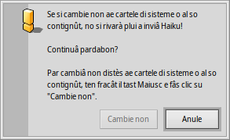
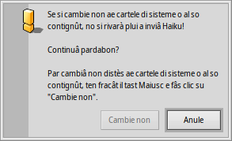

Disposizion dal filesystem
Il filesystem di Haiku al è vonde trasparent, cirint simpri di no doprâ nons criptics pai file e pes cartelis e fasint in mût di no lassâ l'utent a tirâ a induvinâle. I File e lis cartelis impuartants pal bon funzionament dal sisteme, a son protets des modifichis acidentâls cuntun di chescj messaçs di alerte:
 

Il secont messaç di alerte al ven fûr se tu ciris di cambiâ non o eliminâ alc te gjerarchie dal filesystem. Achì, si podarà fâ clic sul boton "" dome tignint fracât il tast MAIUSC.
In gjenerâl, si à doi rams separâts che a partissin de cartele lidrîs dal volum di inviament:
| /boot/system/ | Al conten i file dal sisteme e lis aplicazions/pachets condividûts cun ducj i utents. | |
| /boot/home/ | Cheste e je la cartele personâl dulà che tu tegnis i tiei dâts, lis impostazions e lis aplicazions/pachets che NO son condividûts cun ducj i utents. |
Fintant che Haiku nol devente multi-utent, cheste distinzion tra aplicazions/pachets condividûdis e no-condividudis no à efiets aparents, viodût che al esist dome un utent cuntune cartele home. Ma viodût che in tal ultin si varà il supuart par plui utents, al è il câs di imparâ la juste maniere dal principi.
 La cartele di sisteme - /boot/system/
La cartele di sisteme - /boot/system/
Sot dal predecessôr di Haiku, BeOS, cheste cartele si clamave /boot/beos/. Tu podaressis cjatâle in cualchi vecje documentazion (p.e. tal BeBook origjinâl).
La plui part des cartelis jenfri /boot/system/ a son in dome-leture, che al è sensât viodût che a contegnin i file necessaris pal bon funzionament di Haiku e duncje par vêju al sigûr di alterazions (acidentâls). Lis cartelis dulà che l'utent al pues scrivi a son dome:
| /boot/system/cache/ | E conten i file in cache e la cartele temporanie colegade a /tmp/. | |
| /boot/system/non-packaged/ | E conten une gjerarchie pai file che no son part di un .hpkg (probabil di vecjos archivis di BeOS). | |
| /boot/system/packages/ | In di plui a tignî i pachets di sisteme di Haiku, tu puedis zontâ/gjavâ pachets condividûts tra ducj i utents. | |
| /boot/system/settings/ | E conten lis impostazions globâls dal sisteme. | |
| /boot/system/var/ | E conten i regjistris come il syslog (impuartant cuant che si à di risolvi i problemis) e e je la posizion predefinide pal file di scambi. |
Par vê plui informazions su lis cartelis packages e non-packaged, viôt l'argoment Aplicazions.
La cartele home - /boot/home/
Cheste cartele e je tô. Chi tu puedis creâ e eliminâ ducj i file e lis cartelis che tu vûs. (A proposit, la tilde ("~") e je une scurte pe tô cartele home, cussì tu puedis evitâ di scrivi simpri "/boot/home/" tal Terminâl.)
I file che tu desideris condividi cun altris utents, intun futûr ambient multi-utent, si àn di meti fûr di /boot/home/. Par esempli, tu puedis creâ une cartele /boot/all-users/ e butâ la robe lì.
| ~/Desktop/ | E ten i file dal to scritori. Fasint dopli clic no le vierzarà, viodût che e je za simpri visibile. Cuant che i tiei file a vegnin platâts dai barcons vierts, ti baste passâ suntun altri Spazi di lavôr. Sigûr, si pues ancje sgarfâ te gjerarchie fasint un clic diestri. | |
| ~/mail/ | Cheste e je la posizion predefinide pe tô pueste. | |
| ~/people/ | Cheste e je la posizion predefinide pai tiei file di contat, bute un voli su People. | |
| ~/queries/ | Lis Interogazions a vegnin archiviadis achì, in maniere predefinide par 7 dîs. |
La cartele /boot/home/config/ e je speciâl: propit come /boot/system/ e je soredut sot il control de gjestion dai pachets e duncje di dome-leture. Ancje jê e conten chestis cartelis similârs dulà che l'utent al pues scrivi:
| ~/config/packages/ | Achì tu puedis zontâ/gjavâ i pachets che no son condividûts tra ducj i utents. | |
| ~/config/non-packaged/ | E conten une gjerarchie pai file che no son part di un .hpkg (probabil di vecjos archivis di BeOS) e che no son condividûts tra ducj i utents. | |
| ~/config/settings/ | Cheste cartele e conten lis impostazions par dutis lis aplicazions e cualchi configurazion pal sisteme. Cualchi aplicazion e gjestìs lis sôs impostazions intes sôs sot-cartelis, altris invezit a butin i lôr file di configurazion chi dentri. |
Par vê plui informazions su lis cartelis packages e non-packaged, viôt l'argoment Aplicazions.
Chi si à cualchidune des plui interessantis sot-cartelis di ~/config/settings/:
| boot/ | Cheste cartele e je la posizion pai Script Utent che a vegnin eseguîts prime o dopo dal inviament dal sisteme o al moment di distudâlu. | |
| boot/launch/ | I colegaments ai programs o ai documents in cheste cartele a son inviâts in automatic a ogni inviament dal sisteme. | |
| beos_mime/ | In cheste base di dâts MIME Haiku al ten iniments ducj i diferents gjenars di file e lis lôr impostazions. | |
| deskbar/menu/ | Copiât in cheste cartele, o colegât simpri achì a file/cartelis/interogazions, al ven fûr tal menù dal Deskbar. | |
| kernel/drivers/ | Al è un file di impostazions che al podarès jessi di interès: kernel al ufrìs cualchi configurazion a bas nivel come par esempli la disabilitazion dal SMP, la ativazion dal debug seriâl e la abilitazion de gjestion avanzade de alimentazion. Tu ativis un rie di configurazion gjavant il simbul pai coments "#". Ocjo però sta atent a ce che tu fasis! | |
| Tracker/ | In diplui ai varis file di impostazion par Tracker, e je cualchi sot-cartele interessante: | |
| DefaultFolderTemplate/ | Mostre e dispon ducj i atribûts e la dimension dal barcon daûr dai tiei guscj. Ogni gnove cartele che tu creis lu doprarà come model. | |
| DefaultQueryTemplates/ | Tu puedis definî la disposizion dai barcons dai risultâts es interogazions par cierts gjenars di file. Viôt l'argoment Interogazion: il barcon dai risultâts. | |
| Go/ | Met i colegaments aes tôs posizions preferidis achì par rindilis disponibilis p.e. intai panei vierç e salve. Viôt l'argoment Interface grafiche di Haiku: preferîts e cartelis resintis. | |
| Tracker New Template/ | Zonte un model par cualsisei gjenar di file, chel dopo al devente disponibil dal menù di Tracker . Viôt l'argoment Tracker: lavorâ cui file. |